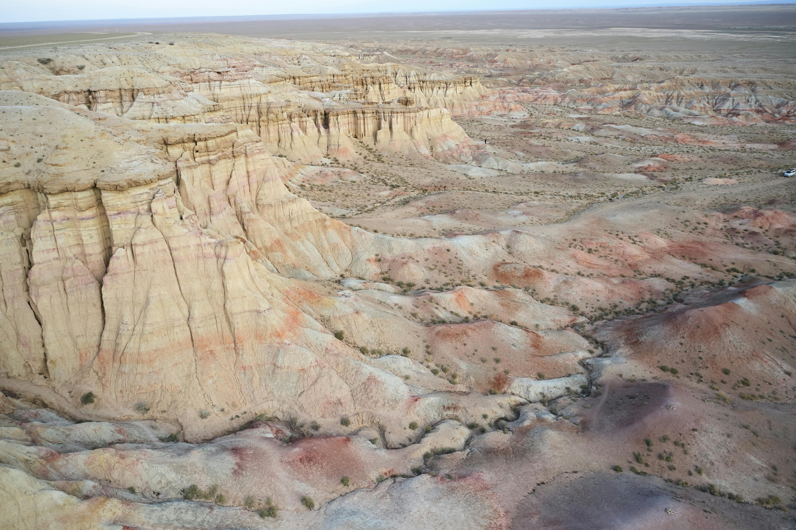
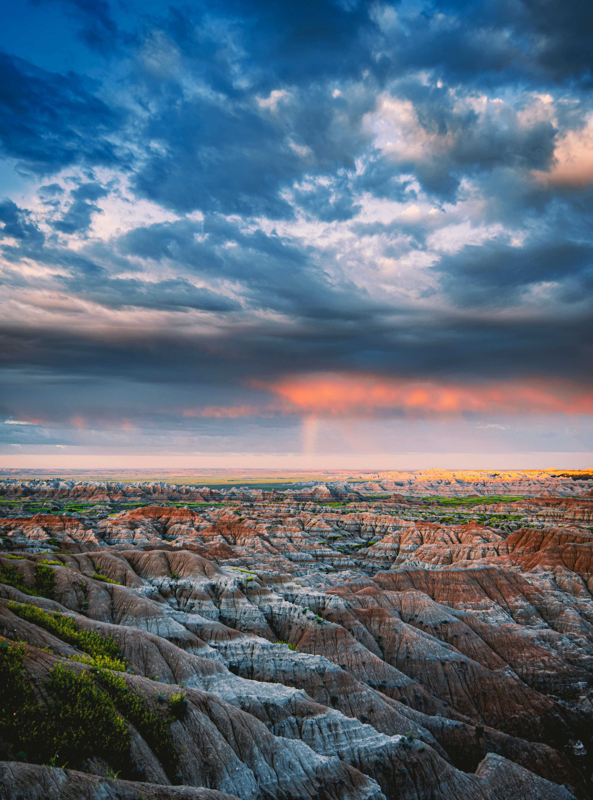

The Badlands are a striking landscape of rugged cliffs, sharp spires, and colorful layered rock that tell the story of millions of years of history. Known for their dramatic beauty, they offer breathtaking views, unique wildlife, and endless opportunities for adventure. Whether you’re drawn to hiking trails, photography, or simply exploring nature’s artistry, the Badlands provide an unforgettable experience that feels both otherworldly and deeply connected to the past.

The Badlands main attractions
- Badlands Loop Road (Scenic Byway)
- Fossil Exhibit Trail
- Notch Trail
- Door Trail
- Window Trail
- Panorama Point Overlook
- Big Badlands Overlook
- Pinnacles Overlook
- Yellow Mounds Overlook
- Sage Creek Wilderness Area
- Roberts Prairie Dog Town
- Ben Reifel Visitor Center

The Boarderlands Main attractions
- Badlands Loop Road (Scenic Byway)
- Fossil Exhibit Trail
- Notch Trail
- Door Trail
- Window Trail
- Panorama Point Overlook
- Big Badlands Overlook
- Pinnacles Overlook
- Yellow Mounds Overlook
- Sage Creek Wilderness Area
- Roberts Prairie Dog Town
- Ben Reifel Visitor Center
